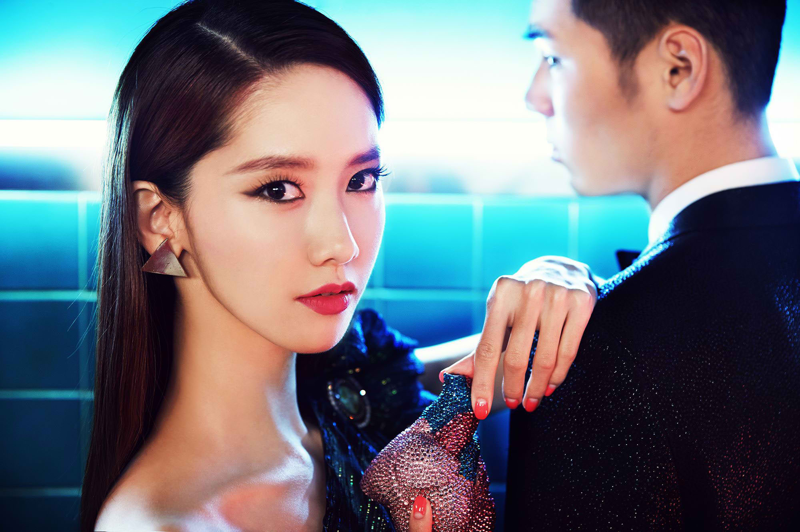

<!DOCTYPE html>
<html>
<head>

	<title></title>
	<link rel="stylesheet" type="text/css" href="memberStyle.css">

</head>
<body>

</body>
</html>

<div class="container">
	<div id="header">
		<font color="101010" size="60">0000000000000000000000</font>
		<a href="file:///home/eunice/Desktop/KIMBERLY OROZCO BSIS-2/index.html#section">MEMBERS</a><font color="101010">00</font>
		<a href=> SONGS</a><font color="101010">00</font>
		<a href=""> ALBUMS</a><font color="101010">00</font>
		<a href="">  ABOUT</a><font color="101010">0000</font>	
	</div>
	<div id="member">
		<div id="section">
			<br>
		  	<div class="img">
			  <a target="_blank" href="taeyeon.html">
			 
			 </a>
			 </div>
		</div>
		<div id="name">Yoona</div>
				<br>
				<strong>
				Name: Im Yoona – Korean: 임윤아<br>
				Birthday: May 30, 1990<br>
				Birthplace: Seoul, South Korea<br>
				Height: 168cm – Blood type: B</strong><br><br>

				Played a part in drama 9 Ends 2 Out (2007)<br>
				Starred in drama You Are My Destiny (2008-2009)<br>
				Starred in drama Cinderella Man (2009)<br>
				Starred in reality-variety show Family Outing 2 (2010)<br>
				Solo in Innisfree Day – commercial song for Innisfree (2010)<br>
				Starred in drama Love Rain (2012)<br>
				Starred in drama Prime Minister & I (2013-2014)<br>
				[TBC] Starring in Chinese drama Wu Shen Zhao Zi Long (2015)<br>

		</div>
	<div id="footer">
			Copyright &copy; 2016 girlsgeneration.com | Kimberly Orozco BSIS-2
	</div>

</div>